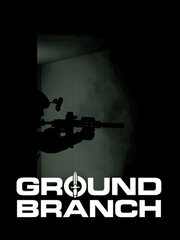

GROUND BRANCH
Details
|  | |
| Playtime | 29m 0s |
| Last Activity | 8/8/2022 21:31:19 |
| Added | 8/19/2023 14:50:26 |
| Modified | 8/19/2023 15:15:52 |
| Completion Status | Played |
| Library | Steam |
| Source | Steam |
| Platform | PC (Windows) |
| Release Date | 8/14/2018 |
| Community Score | 60 |
| Critic Score | |
| User Score | |
| Genre | Indie Simulator |
| Developer | |
| Publisher | |
| Feature | Co-Operative Multiplayer Single Player |
| Links | Steam Official Twitch |
| Tag | |
Description


In GROUND BRANCH, you will play as the elite paramilitary arm of the CIA's Special Activities Center/Special Operations Group (SAC/SOG) and lead other special operations forces through challenging deniable ops all over the globe. With deliberate, calculated and unforgiving gameplay, GROUND BRANCH aims to be the true rebirth of the tactical realism genre of the late '90s and early 2000s. Powered by Epic's Unreal Engine 4, GB puts the "tactical" back in "tactical shooter"—no compromises.
▶ TRUE FIRST PERSON

GROUND BRANCH's unique True First-Person System improves world immersion and awareness of your surroundings, providing zero disconnect between your view and your character's physical presence in the environment. See your foot sticking out of cover? Better tuck it in—enemies may be able to see it (and shoot it) too, but only if their line of sight and muzzle are verifiably unobstructed. Cameras are placed at the character's eyes and bullets originate from the weapon's muzzle. In GROUND BRANCH, what you see is what you get.
A minimal HUD with multiple optional elements ensures that vital information is available, but never a constant obstacle to either immersion or your field of view.
▶ UNPRECEDENTED CUSTOMIZATION

Say goodbye to pre-defined kits and fully customize your character and gear from basic appearance and outfit to in-depth vest and weapon platform customization, down to individual pouch and attachment placement. What you bring to your mission is determined only by your loadout choice, with realistic consequences: With the upcoming encumbrance and stamina system, too much equipment will impact your character's speed and performance; place a scope too forward on the rail and your sight picture will be too small; bring a long rifle into CQB and weapon collision may prove a hindrance.
Forget unlocks, microtransactions and loot boxes. Ground Branch operators get all the right tools for the job straight away—courtesy of the Agency.
▶ OPERATE, COOPERATE

Whether in 8-player co-op or 8v8 adversarial game modes, GROUND BRANCH's unforgiving gameplay makes careful and calculated teamwork essential. Gather your teammates and practice in full-featured training areas, including shooting ranges with dynamic targets and customizable killhouses. Integrated VOIP with both 3D positional voice and radio ensures full communication capabilities with no need for third-party software. Text chat and pre-recorded voice messages (commo rose-style) also available for the mic-less and the shy.
Prefer single-player? Missions with friendly A.I. and a full command system are fully planned.
▶ BE IN FULL CONTROL

In the tactical shooter realm, movement and weapon handling are king. Take full control of your character with standing, crouching and (soon!) prone stances—each with multiple movement speeds—as well as unique weapon postures (including low- and high-ready), leaning and stepping out, free-look (head movement independent from aim), customizable and optional free-aim (dead zone), dedicated mouse sensitivity sliders for point-shooting/unmagnified/magnified aiming, and all-around highly configurable key bindings.
You can also choose between speed reloads (drop magazine) and tactical reloads (retain current magazine) on the fly.
▶ ADDITIONAL FEATURES
☑️ = FULLY or PARTIALLY IMPLEMENTED⏳ = PLANNED/UPCOMING
Missions
- ⏳ GROUND BRANCH's unique "campaign" format will deliver smaller, more localized sets of missions based around global hotspots, with a centralized intelligence interface to monitor them and receive new mission orders over time. The choices you make along the way may affect future engagements.
- ☑️ Based on unique environments all over the world, the non-linear mission and map designs offer multiple entry points and open-ended outcomes.
- ☑️ Enemies are spawned at mission start, with a degree of randomization to quantity and location. No "monster closets" or magic enemy spawns based on player location or mission progress.
Multiplayer
- ☑️ Ready Room: A physical multiplayer lobby where you can plan your approach, see your teammates' loadouts, test weapon configurations on a firing range and jointly select insertion points.
- ☑️ Full and 100% free dedicated server support. Host a server wherever you want!
- ⏳ Unit patches that can be attached to your character's sleeves and gear.
- ⏳ Full support for MP ladders.
- ☑️ After-action review (AAR) following each mission/round.
- ☑️ Server-side options.
Miscellaneous
- ⏳ Full mod support.
- ☑️ No item unlocking, hit markers, kill confirmations or score pop-ups.
- ⏳ Weapon bracing/supporting.
- ☑️ Varied arsenal: Multiple handguns, submachine guns, carbines, assault and battle rifles, machine guns, DMRs, sniper rifles and explosives to choose from, with selectable ammunition type (e.g. full metal jacket, hollow point or subsonic rounds, smoke grenade color etc.).
- ☑️ Map variation: In addition to day and night versions as well as weather variation, maps have small details that can change between rounds, such as doors and windows that may be open, closed or blocked.
- ☑️ Unlimited loadout save slots.
- ☑️ Item sharing/dropping/pickups.
- ☑️ Accurate ballistics with penetration, bullet drop and stopping power simulation.
- ⏳ No regenerating health or health packs: Administer first aid to non-lethal injuries for reduced combat effectiveness.
- ⏳ Location damage model: Expect visible injuries and consequences, such as limping, reduced arm function, and/or hits to stamina and accuracy. Players immobilized from a non-lethal injury can stay in the fight.
- ⏳ Carry teammates to safety to administer first aid—or to safely recover their ammo, gear, cargo or body if they are no longer alive.
- ⏳ Appropriate and realistic playable female characters.
- ☑️ Partial controller support (configurable).